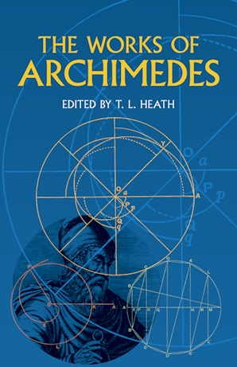

47:28 · 9 OPERE
Logic and ethics: Ethical choice in a time of moral confusion.
Il filo del discorso
Una lezione in inglese collega chiarezza del pensiero e responsabilità morale. Il relatore parte da Améry, Heschel e dall’invito kantiano a usare il proprio intelletto, poi propone esempi matematici e filosofici per distinguere una rappresentazione dalla realtà. Archimede, il rapporto fra Newton ed Einstein e la critica kantiana alla prova ontologica conducono a un esercizio sul cielo nuvoloso: una classificazione troppo semplice può nascondere informazioni. Questa dimostrazione didattica non prova che l’informatica binaria sia incapace di rappresentare gradazioni. Nella seconda parte il relatore interpreta l’antisemitismo come un segnale di pericolo per l’intera società, critica il linguaggio dei media e le università e richiama il dovere di opporsi al male. Le sue valutazioni delle manifestazioni contemporanee e l’accostamento alla Germania degli anni Trenta restano tesi politiche attribuite. I racconti biblici e il cavallo di Troia concludono l’invito a riconoscere l’inganno e a giudicare autonomamente.
I libri nel discorso

Essays on Antisemitism, Anti-Zionism, and the Left
Identificazione probabile
Copertina: Indiana University Press, gennaio 2022, 124 pagine, edizione rilegata ISBN 9780253058751; cura Marlene Gallner, traduzione Lars Fischer, prefazione Alvin H. Rosenfeld. Copertina autentica del catalogo editoriale. La stampa mostrata nella lezione non è stata verificata sul video.
Immagine autentica dell’opera, controllata visivamente; l’edizione di riferimento non è attribuita al filmato.
Améry, Indiana University Press e Marlene Gallner riconoscibili; titolo non pronunciato e fotogramma non verificato. Identificazione probabile della raccolta del 2022.
Passaggio 1:59 ↗ · Fonti e libro ↗
Chi è l’uomo?
Copertina: SE, 2023
Abraham Joshua Heschel e la domanda Who Is Man? riconoscibili nella ASR, con nome deformato; riutilizzata la voce italiana della stessa opera.
Passaggio 3:28 ↗ · Fonti e libro ↗
Risposta alla domanda: che cos’è l’Illuminismo?
Copertina della raccolta che comprende il saggio sull’Illuminismo: Firenze University Press · Sette scritti politici liberi · 2011 · a cura di Maria Chiara Pievatolo
Copertina del volume cartaceo FUP che comprende il saggio, riscontrato dal catalogo universitario. L’ISBN appartiene alla raccolta; il filmato non annuncia un’edizione e il titolo del saggio è un’identificazione probabile della citazione.
What Is Enlightenment e Kant espliciti; motto ripreso a 2004 secondi.
Passaggio 4:09 ↗ · Fonti e libro ↗
L’Arenario
Identificazione probabile
Copertina della raccolta The Works of Archimedes: COPERTINA DELLA RACCOLTA The Works of Archimedes, a cura di T. L. Heath, Dover 2002, ISBN 9780486420844. Ristampa dell’edizione 1897 con il supplemento 1912: L’Arenario appartiene al volume principale, Il metodo al supplemento. La copertina blu con ritratto e costruzioni geometriche non è un’edizione autonoma del singolo trattato. L’inclusione del supplemento è dichiarata dall’editore; NYU ne identifica il contenuto.
Copertina della raccolta che contiene il testo, riutilizzata dal riferimento già presente a Sui galleggianti. Volume 1897 più supplemento 1912; non copertina autonoma.
Archimede e il problema della sabbia: identificazione probabile dell’Arenario, titolo non pronunciato.
Passaggio 9:45 ↗ · Fonti e libro ↗Proslogion
Identificazione probabile
Copertina: BUR, catalogo editoriale 18 novembre 1992, ISBN 9788817169028, cura Lorenzo Pozzi, testo latino a fronte, con obiezioni di Gaunilone e risposta di Anselmo. Il catalogo corrente indica 240 pagine; il record bibliotecario della stampa descrive 225 pagine. Copertina corrente autentica del catalogo, non identificazione della stampa eventualmente usata nel filmato.
Immagine autentica dell’opera, controllata visivamente; l’edizione di riferimento non è attribuita al filmato.
Anselmo di Canterbury e argomento ontologico espliciti; titolo Proslogion inferito e segnalato probabile.
Passaggio 14:39 ↗ · Fonti e libro ↗
Critica della ragione pura
Identificazione probabile
Copertina: Adelphi · Gli Adelphi 85, 1995 · traduzione e cura Giorgio Colli
Immagine autentica dell’opera, controllata visivamente; l’edizione di riferimento non è attribuita al filmato.
Critica kantiana attraverso l’esempio dei talleri: probabile rimando alla Critica della ragion pura, titolo non pronunciato.
Passaggio 17:56 ↗ · Fonti e libro ↗
Bibbia
Copertina: San Paolo, 2014 · Nuova Versione dai Testi Antichi · edizione di riferimento
Psalms esplicito; parafrasi riconducibile a Salmo 97,10. Genesi e serpente espliciti a 2559 secondi, Genesi 3.
Passaggio 34:44 ↗ · Fonti e libro ↗
Civilization and Ethics (Kultur und Ethik)
Identificazione probabile
Copertina della raccolta: Prometheus · The Philosophy of Civilization · 1987 · raccolta in inglese
Copertina della raccolta Prometheus del 1987 che contiene The Decay and Restoration of Civilization e Civilization and Ethics. I due saggi, originariamente distinti, restano voci separate. L’edizione in inglese dell’immagine non è attribuita al video.
Schweitzer e reverence for life espliciti; probabile rimando a Kultur und Ethik, senza titolo del volume pronunciato.
Passaggio 35:28 ↗ · Fonti e libro ↗
Eneide
Identificazione probabile
Copertina: BUR, 11 settembre 2002, introduzione Antonio La Penna, traduzione e note Riccardo Scarcia, testo latino a fronte, 1168 pagine; ISBN 9788817117418.
Immagine autentica dell’opera, controllata visivamente; l’edizione di riferimento non è attribuita al filmato.
Laocoonte e frase Timeo Danaos et dona ferentis: fonte identificabile in Eneide II,49. Il relatore nomina Omero nel racconto, ma la frase latina è virgiliana; titolo non pronunciato.
Passaggio 44:44 ↗ · Fonti e libro ↗Minutaggi ricavati da testi automatici, da riascoltare. Le identificazioni probabili sono segnalate accanto ai libri.